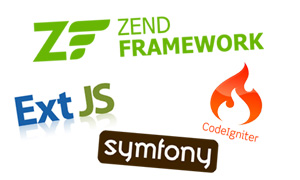

CodeIgniter, Zend Framework ve Symfony
PHP Frameworkler'in tanıtımı
İçindekiler
CodeIgniter
Giriş
"CodeIngiter, inanılmaz PHP programları yazmanıza yardımcı olan açık kaynaklı bir web uygulama çatısıdır."
Evet gördüğünüz gibi iddialı bir sloganla karşıya çıkan CodeIgniter (fanları CI diye hitap eder), frameworklere yeni başlayanlar için en hızlı ve yumuşak geçişi sağlayacak PHP uygulama çatılarından birisidir. EllisLab tarafından geliştirilmektedir. ExpressionEngine adındaki çok popüler bir içerik yönetim sisteminin gelişimine paralel olarak geliştirilmeye devam etmektedir.
Editörün Notu:Bu bölümü hazırlarken kısa bir giriş yapıp ağırlıklı olarak çok temiz hazırlanmış CodeIgniter Kullanım Klavuzundan yararlanacağım. Aşağıda gördüğünüz kısmındaki içeriklerin çoğunu CodeIgniter Türkiye Grubu'nun kurucusu Fatih BAZMAN'ın hazırladığı Türkçe CodeIgniter Kullanma Klavuzundan aldım. Kendisine teşekkürü borç bilirim.
CodeIgniter, PHP kullanarak kod yazan kişiler için geliştirilmiş bir Uygulama Geliştirme Çatısıdır. Yazdığınız kodların optimize edilerek hızlı, geliştirilmiş kütüphaneler yardımıyla basit arayüzler ve mantıksal yapı içinde çalışmasını sağlamayı amaç edinir. CodeIgniter, sadece projeniz için geliştireceğiniz kodlar üzerinde odaklanmanızı sağlar.
CodeIgniter kimler içindir?
Eğer aşağıdakilerden biriyseniz, CodeIgniter sizin için doğru bir seçimdir:
- Az yer kaplayan bir çatı altında program yazmak istiyorsanız.
- Oloğanüstü bir performansa ihtiyacınız varsa.
- Değişik PHP versiyon ve konfigürasyonlara sahip sunucular üzerinde çalışmaya uyumlu bir çatıya ihtiyacınız varsa.
- Neredeyse sıfır konfigürasyona ihtiyaç duyan bir çatıya ihtiyacınız varsa.
- Eğer çatıyı komut satırından kullanmaya ihtiyacınız yoksa.
- Sınırlayıcı kodlama kurallarına bağlı kalmak istemiyorsanız.
- PEAR gibi geniş ölçekli monolitik kütüphaneler ile ilgilenmiyorsanız.
- Şablonlama dillerini öğrenmek istemiyorsanız (yine de eğer isterseniz şablon kullanımı da seçime bağlı olarak CodeIgniter'da vardır).
- Karmaşıklıktan çekiniyorsanız, basit çözümler favorinizse.
- Temiz ve anlaşılır bir dokümantasyona ihtiyacınız varsa.
Desteklenen özellikler
Kullanıcı deneyimleri ya da nasıl akıllıca ya da öngörüyle tasarlandığı hakkında bir şey demeden, sadece özellikler hakkında konuşmak bir uygulamayı özelliklerine göre yargılamanın kötü yoludur. Özellikler, kodun kalitesini, performansını, detaylara dikkat edilip edilmediği ya da güvenlik uygulamaları hakkında hiçbir şey ortaya çıkarmaz. Bir uygulamayı gerçekten yargılamanın tek yolu kodlarını almak ve denemektir. Kurulum CodeIgniter için çocuk oyuncağıdır bu nedenle CodeIngiter geliştiricileri sizlerin denemenizi istiyorlar. Bu arada CodeIgniter'ın ana özellikleri listesi şöyledir.
- Model-View-Controller Tabanlı Sistem
- PHP 4 uyumluluğu
- Olağanüstü Hafiflik
- Değişik platformlar için destek veren tam özellikli veritabanı sınıfı.
- Active Record Veritabanı Desteği
- Form ve data doğrulama
- Güvenlik ve XSS Filtresi
- Oturum Yönetimi
- E-posta Gönderme Sınıfı. Ek Desteği, HTML/Text e-posta, çoklu protokoller (sendmail, SMTP, and Mail) ve fazlası.
- Resim İşleme Kütüphanesi (kesme, yeniden boyutlandırma, döndürme, vs.). GD, ImageMagick, ve NetPBM desteği
- Dosya Yükleme Sınıfı
- FTP Sınıfı
- Yerelleştirme
- Sayfalandırma
- Data Şifreleme
- Karşılaştırma
- Tam Sayfa Hafızalandırma
- Hata Kayıt
- Uygulama Profili
- İskele
- Takvim Sınıfı
- Kullanıcı Bilgileri Sınıfı
- Zip Sıkıştırma Sınıfı
- Şablon Derleme Sınıfı
- Trackback Geri İzleme Sınıfı
- XML-RPC Sınıfı
- Unite Test Sınıfı
- Arama-motoru Dostu URL
- Esnek URL Yönlendirme
- Kanca, Sınıf Genişletme ve Plugin Desteği
- Helper fonksiyonları için geniş kütüphaneler
Uygulama akış şeması
Aşağıdaki çizim sistemdeki data akışını göstermektedir:

- Index.php dosyası controller önyüzü olarak hizmet eder, CodeIgniter'ın ihtiyacı olan ana kaynaklarını başlatır.
- Yönlendirici HTTP isteklerini denetleyip onlarla ne yapılacağını gözden geçririr.
- Eğer önbellek dosyası mevcutsa, bu dosya tarayıcıya gönderilir, normal sistem çalışması atlanır.
- Güvenlik. Uygulama Controller dosyası yüklenmeden önce, HTTP istemi ve kullanıcı girdi bilgileri güvenlik için filtrelenir.
- Controller dosyası Model dosyasını, çekirdek kütüphanelerini, pluginleri, helperları ve işlem için özellikle ihtiyaç duyulan diğer dosylaarı yükler.
- Sonuçta View dosyası görüntülenmek için web tarayıcısına gönderilir. Eğer önbellek seçiliyse, View önce önbeliği yeniler sonra takip eden istekleri gerçekleştirir.
Tasarım ve mimari amaçlar
CodeIgniter geliştiricilerinin amacı küçük ve mümkün olduğunca hafif bir paket içinde maksimum performans, yetenek ve elastikliktir.
Bu amacı karşılamak için, kendilerini kıyaslamaya, yeniden düzenlemeye ve geliştirme prosesinin her adımında basitleştirmeye, amaçlarından uzaklaştıran herşeyi bırakmaya adadılar.
Teknik ve mimari bakış açılarından, CodeIgniter ile aşağıdaki amaçları yarattılar:
- Dinamik Kurulum: CodeIgniter'da, bileşenler yüklenir ve rutinler küresel değil, ihtiyaç olunca çalıştırılır. Kabuller ederek sistem çalışmak yerine minimal çekirdek kaynaklarının ihtiyacını sağlayan oldukça hafif bir sistem varsıylarak çalışır. Olaylar, HTTP istemlerinin tetikler ve controller ile view dosyaları neyin gerektiğine karar verir.
- Gevşek Bağlantı: Bağlantı, sistemin hangi bileşenlere dayanacağını gösteren bir derecedir. Az bileşen diğerlerine, tekrar kullanmasıyla ve sistemin elastik olmasıyla bağlıdır. Amaçları oldukça gevşek bağlantılı bir sistemdir.
- Bileşen Tekilliği: Tekillik, hangi bileşene odaklanma amacını gösteren bir derecedir. CodeIgniter'da, her sınıf ve onların foksiyonu maksimum kullanışlığı sağlamak için özerkleştirilmiştir.
CodeIgniter dinamik kurulumlu, bileşen tekilliğiyle gevşek bağlantılı bir sistemdir. Küçük bir dağıtım paketinde basitlik, elastiklik ve yüksek performans sağlama çabasındadır.
Kullanım klavuzundan genel inceleme
Bu bölümde CodeIgniter'in yalın, temiz ve oldukça anlaşılır bir dille hazırlanan Kullanım Klavuzunu genel hatlarıyla inceleyeceğiz. Bildiğim hatırladım kadarıyla size adım adım neyin ne işe yaradığını anlatmaya çalışacağım. Eğer düzenlediğimiz seminere katılmamış ve bu makaleyi sadece okuyorsanız, konuyu özetlediğim seminer videosunu izleyebilirsiniz.
Yararlanabileceğiniz Bazı Kaynaklar
- "CodeIgniter'e başlamanız için gereken herşey" adındaki NetTuts makalesi
- CodeIgniter'i anlatan birkaç video (Şu 20 dk'da blog hazırlama videolarından da var)
- Derek Allard'ın hazırladığı videolu bir eğitim uygulaması
- CodeIgniter 2'de bulunan yeni özellikler hakkında bir makale
- CodeIgniter Türkiye grubundan bazı makaleler
- CodeIgniter sınıf ve fonksiyonlarına genel bakış yapabileceğiniz şemalar (Cheetsheets)
- CodeIgniter sınıf bağımlılığını gösteren bir şema
Codeigniter'in yol haritası
Bu gün CodeIgniter hakkettiği üne kavuşarak, dünyada bir çok geliştiricinin tercihi olmuştur. Böyle bir sistemi geliştirenler de her geçen gün ihtiyaçları artan geliştiricilere daha iyi hizmet sunabilmek ve uygulama çatılarının rekabetlerinden ötürü kendileririni sürekli yenilemektedirler.
CodeIgniter'in ExpressionEngine CMS ile paralel olarak geliştirildiğini söylemiştik. EllisLab tarafından geliştirilen bu ürünün 2.0 versiyonu ile birlikte CodeIgniter'in de 2.0 versiyonunun yolda olduğu uzun zaman önce duyuruldu. CodeIgniter 1.7.x sürümünden 2.0 sürümüne major bir değişiklikle atlamaya hazırlanıyor. Peki bu yeni versiyon beraberinde neleri getirecektir ?
- PHP 4 desteği bırakılarak, sadece PHP 5 desteği ile yola devam edecektir.
- SVN'den Mercural alt yapısı sunan BitBucket'a taşınarak kapalı devre yerine social-coding olarak geliştirilmeye başlanmıştır.
- Scaffholding ve plug-in kütüphaneleri kaldırılıyor.
- Çekirdek, uygulama ve bazı dızınlerde yapısal değişikliğe gidiliyor.
- Uygulama paketleri ekleniyor. Birden fazla uygulamanız için "application/_common" dizini aldında ortak dosyalar kullanabileceksiniz.
- Driver (sürücü) sınıflarını yazmanıza olanak sağlanacak.
- Veri tabanı ayarlarına birkaç yeni parametre daha ekleniyor.
- CSRF kontrolü ekleniyor, XSS gibi atakların önleneceği kütüphaneler de dahil olmak üzere yeni security sınıfına taşınıyor.
Zend Framework
Giriş
PHP'nin ruhu ve sanatından esinlenen Zend Framework'ün temelinde, basitlik, nesne yönelimli prensiplerin en iyi uygulamaları, şirket dostu lisanslama ve çok ayrıntılı test edilmiş çevik kod alt yapısı barınmaktadır.
Zend Framework, diğer uygulama çatılarının aksine size hazır bir iskelet, ve bir takım kalıplaşmış kurallar sunmaz. ZF, PEAR'ı andıran ve birbirinden tamamen bağımsız çalışabilecek şekilde tasarlanmış bir dizi kütüphane ile gelir. Siz geliştireceğiniz uygulamanıza göre bu sınıflardan işinize yarayanları alır kullanırsınız. Bu bakımdan biz tembel geliştiricilere ilk etapta çok hızlı bir uygulama çatısı sunamasa da aslında, bu ilk aşamayı atladığınızda ne kadar güçlü bir mimariye sahip olduğunu farkedersiniz.
Zend Framework, Bootsraping denilen bir kavramla hayatımıza girer. Bootstrap (önyükleyici), eğer Zend_Application kullanarak bir uygulama oluşturuyorsanız, uygulamanızın temellerini oluşturacak ZF sınıflarını sisteme dahil etmenizi sağlayan ana PHP kodunuzdur. Siz bootstrap sınıfları hazırlayarak ve içine yazacağınız "_init" önadı ile tanımlanan korumalı (protected) methodlarla belli bir takım kaynakları uygulama başlarken ZF'ün kullanmasını sağlayabilirsiniz. Örn: "protected _initDB() {}" methodu bootsrap sınıfı yüklenirken veri tabanı işlemlerinizle ilgili kısmı da işlemenizi sağlayan geçiş kapısını açar.
ZF sınıflarını incelediğimizde, geliştirenlerin nesne yönelimli geliştirme felsefesini ne kadar iyi kullandıklarını ve bilinen bir çok tasarım şablonunu, kurdukları mimaride uyguladıklarını göreceksiniz.
Genel özellikleri
Zend Framework size genel olarak şu özellikleri sunar;
- Tüm bileşenleri katı bir nesne yönelimli mimari ile kurgulanmıştır ve PHP 5'e tam destek verir.
- Gevşek parçalardan oluşan birbirine az bağımlı bir mimari kurulmuştur.
- Genişletilebilir bir MVC yapısı sunar. Ayrıca genel yerleşimler (layouts) ve PHP-temelli taslakları (templates) kullanmanıza olanak sağlar.
- Çoklıu veri tabanı desteği sunar. Bünyesine MySQL, Oracle, IBM DB2, Microsoft SQL Server, PostgreSQL, SQLite, ve Informix Dynamic Server veri tabanlarının sürücülerini dahil etmişitir.
- Mbox, Maildir, POP3 and IMAP4 gibi e-posta protokollerini destekler.
- Hafıza yada dosya sistemi kullanarak front-end veya back-end önbellekleme özelliklerini esnek bir şekilde destekler.
Zend sınıfları
Bu bölümde incelediğim kadarıyla sizlere yüzeysel olarak Zend Framework'ün bazı sınıflarından bahsedeceğim. Referans olarak ise Zend Framework'ün kendi Kullanım Klavuzundan yararlanacağım.
|
|
|
Yukarıdaki listede kalın yazılan sınıf isimleri, hakkında fikir sahibi olduğum ve inceleme fırsatı bulduklarımı temsil etmektedir.
ZF dokümanlarıyla hızlı başlangıç
Bu bölümde Zend Framework kullanım klavuzunda bulunan hızlı başlangıç rehberinden yararlanarak genel hatlarıyla sistemi size anlatmaya çalışacağım.
Yararlanabileceğiniz Bazı Kaynaklar
- Zend Framework Kullanım Klavuzu
- Çok kapsamlı bir Zend Framework video eğitim arşivi (Zendcasts)
- ZF eğitimleri içeren bir site
- "Zend Framework in Action" adlı kitabin yazarı Rob Allen'in hazırladıgı başlangıç rehberi
Zend Framework'ün yol haritası
Her uygulamada olduğu gibi ZF tarafında da geliştiricilerin ihtiyaçlarına cevap verebilmek için sürekli değişiklikler olmakta. ZF gördügüm en disiplinli ve sistemli çalışan bir geliştirme ekibine sahip. İçerik sağlayıcı (Contrubutor) adı vereilen bu kişiler, ZF'ye hergün satırlarca yeni kod eklemekte. Başlarda kapalı düzen gitmekte olan ZF gelişimi bir süre sonra içerik sağlayıcıların da dahil olmasıyla gelişim ivmesini oldukça hızlandırmıştır. Sizler de ZF geliştirici olabilirsiniz. Yapmanız gereken tek şey ZF sitesinden ilgili bölümü ve kurallarını okuyarak sisteme başvuruda bulunmaktır.
Gelişimin ivmesi giderek armaktadır demiştik. bu konuda ZF cilerin yol haritasında diğer bir çok Framework gibi major değişikliklere gitme planları olduğunu görüyoruz. Başta daha uzman bir kitleye hitap etmek için tasarlanan ZF geliştiricileri, toplulukta bir çok temel başlangıç kılavuzu çıkacağını düşünerek daha fazla kitleye yayılacaklarını düşünmüşlerdir. Ancak bu durum tam bir fiyasko ile sonuçlanarak ZF'nin sadece uzman kesimin kullanımında kalmasına sebep olmuştur.
Şu sıralar Zend Framewok'ün 2.0 versiyonunu geliştirmeye başlanmıştır. PHP 5'in getirdiği bir çok özellik ve geliştiricilerde tabana yayılma çabasından ötürü, GitHub üzerinden daha bir sosyal kodlama ortamı ile geliştirilme kararı almaları bence oldukça doğru bir seçim olmuştur.
ZF 2.0 da olması planlanan bazı yeni özellikler;
- PHP 5.3 özelliklerine tam destek. Özellikle namespace desteği.
- Kodlarda %40 oranında bir azaltılmaya gidilecektir.
- %300 performans artışı için kolları sıvadılar.
- H-MVC denilen modüler mimariye tam destek.
- Diğer frameworkler gibi daha kolay kurulabilen temel bir mimari ile gelecek.
- Öğrenme eğirisini kısaltmak.
Daha detaylı incelemek isterseniz, Zend Framework 2.0 yol haritası ve geliştirme ekibini Zend Framework 2.0 da olması gerekenleri tartıştıkları adresleri ziyaret edebilirsiniz.